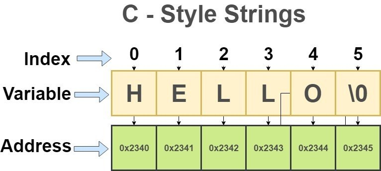
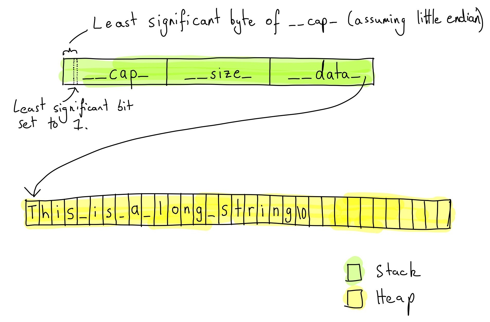

Historically, the need for strings and their use in game engines was fairly limited — except, perhaps, for resource localization, where you needed full support for something beyond the ASCII set. But if they wanted to, developers managed to pack even those resources into the available 200 elements of the ASCII set, and since a game usually launches in only one locale, there was no need for conversion at all. There are differences from the standard, though: thanks to Sony, practically from the early 2000s, even before the C++20 standard, game developers had several models of character literals available. Standard ASCII on the PS1 and partial Unicode support (ISO 10646); the SDK for the second PlayStation added UTF-16 and UTF-32 support, and after the PS3 came out, UTF-8 support was added.
int main()
{
char c1{ 'a' }; // 'narrow' char
char8_t c2{ u8'a' }; // UTF-8 - (PS3 and later)
char16_t c3{ u'貓' }; // UTF-16 - (PS2)
char32_t c4{ U'🐱' }; // UTF-32 - (PS2 limited)
wchar_t c5{ L'β' }; // wide char - wchar_t
}C-Style strings (NTBS)

Any null-terminated byte sequence (NTBS), which is a chain of non-zero bytes plus a terminating null character (the character literal '\0').
The length of an NTBS is the number of elements preceding the terminating null character. An empty NTBS has length zero.
A string literal is a sequence of characters surrounded by double quotes (" ").
int main(void)
{
char string_literal[] = "Hello World";
std::cout << sizeof(string_literal) << '\n'; // 12
std::cout << strlen(string_literal) << '\n'; // 11
}In C/C++, single quotes (') are used to denote character literals. Single quotes (' ') can't be used to represent strings, but the first SDKs from Sony allowed you to place strings the same way; the same role was played by the ` character ("grave," or "backtick"). In that case the compiler placed those strings closer to the start of .rodata, if we map it onto a modern exe, which had certain peculiarities in use.
char string_literal[] = `Hello World`; // also a string, placed at the start of rodata
char another_string_literal[] = 'Hello World'; // this was allowed tooC-strings and string literals
What's the difference between the following two string definitions? (godbolt)
int main()
{
char message[] = "this is a string";
printf("%u\n", sizeof(message));
const char *msg_ptr = "this is a string";
printf("%u", sizeof(msg_ptr));
}Spoiler — disassembly
main:
push rbp
mov rbp, rsp
sub rsp, 48
mov rax, qword ptr [rip + .L__const.main.message]
mov qword ptr [rbp - 32], rax
mov rax, qword ptr [rip + .L__const.main.message+8]
mov qword ptr [rbp - 24], rax
mov al, byte ptr [rip + .L__const.main.message+16]
mov byte ptr [rbp - 16], al
lea rdi, [rip + .L.str]
mov esi, 17
mov al, 0
call printf@PLT
lea rax, [rip + .L.str.1]
mov qword ptr [rbp - 40], rax
lea rdi, [rip + .L.str.2]
mov esi, 8
mov al, 0
call printf@PLT
xor eax, eax
add rsp, 48
pop rbp
ret
.L__const.main.message:
.asciz "this is a string"
.L.str:
.asciz "%u\n"
.L.str.1:
.asciz "this is a string"
.L.str.2:
.asciz "%u"The first output will show 17 — the number of characters in the string (including the null character). The second will show the size of a pointer. The strings above are visually identical, but:
- For
message, memory is allocated on the stack at runtime. From the compiler's point of view it's a byte array filled from the string literal. This data can be modified without issue. - For
msg_ptr, only the address of the string literal is stored on the stack — the literal itself lives in the.rodatasegment, and no copy of the literal is made. This data usually can't be changed, though with some effort it can. - The first feature of those backtick strings was that identical strings were "merged" to save memory. The second was the ability to write into that section, which many developers used, for example, to pass data around the standard save mechanisms within a single game session.
The valiant Nintendo decided to continue Sony's glorious tradition of tossing developers extra puzzles, and in its latest SDKs (since 2018) rolled out its own string implementation based on a separate memory pool in the system. By the benchmarks it works faster, but I wouldn't say it became popular.
C String Standard Library
Usually a vendor's SDK provides a string-manipulation library <string.h>, optimized for the specific console model, containing helper functions like strcpy/strlen. Well, everyone except Sony. Before the switch to clang, those functions weren't in the SDK distribution. But most developers didn't notice, because game engines already had their own hand-written functions for working with strings. Microsoft, by the way, didn't suffer from such a careless attitude — everything was in place from the very first Xbox SDKs.
copying strings : strcpy, strncpy, strdup
concatenating strings : strcat, strncat, strappend
comparing strings : strcmp, strncmp
parsing strings : strcspn, strstr, strchr, strchrrev, strupper...
tokenize : strtok, strsplit
length : strlen, stremptyAll these functions rely on the passed pointer pointing to a properly formed null-terminated string; to this day the behavior of these functions is undefined if the pointer is to something other than an NTBS. Sony made attempts to push strings that began and ended with a special byte sequence, with those blocks living outside the data block, but they didn't get past SDK versions 4 and 5, and are now removed entirely. The reason for such inventions was console security and the consecutive hacks of the PS3 Fat and PS3 Slim.
Scope of application: the widest — any software that doesn't require special string capabilities. In game engines, in pure form it's not very common because of the verbosity of the supporting code, security issues, and portability problems across platforms.
C++ strings

The C++ standard library supports the <string> header. The base type std::string can be thought of as a variable-size array of characters, and it contains functions for the most common operations — initialization from string literals, concatenation, search, and so on — which, however, doesn't make parsing strings any simpler than with C-strings, but still takes most of the work off the average programmer. Adding, mind you, other problems and tasks — but more on that later.
const std::string this_string { "This is" }; // initialise
int main() {
std::string name = " string";
std::string concat_str = this_string + name; // concatenation
std::cout << concat_str;
if (!this_string.empty()) {
std::cout << '\n' << this_string.length() << '\n';
std::cout << this_string[0] << ' ' << this_string.front() << '\n';
std::cout << this_string[this_string.length()-1] << ' ' << concat_str.back() << '\n';
}
}
// ---- output ----
This is string
7
T T
s gstd::string can't be used directly where a const char* is required, because the data field isn't necessarily the first member of the class and you can't reference it. And many (if not all) SDK utilities, tools, and interfaces prefer a C-API that requires converting std::string to const char*. The C-API here isn't chosen out of luxury either: the internal ABI implementation for classes can differ not only between vendors and compilers, but even within minor compiler versions for a console, as Nintendo likes to do, periodically breaking backward compatibility between SDKs. That's why a single bundle may contain several binaries built for different targets, because a user isn't obliged to update the console to the latest firmware and may well sit on the previous stable build.
std::string has a .c_str() method that returns a pointer to the internal C-style string (const char*). Besides that, std::string, like most container types, allows access to its internal data via .data() or the standard library function std::data().
Scope of application: used very sparingly, relying more on in-house solutions and string algorithms, and also because of dynamic memory allocation.
Memory management
By default std::string uses the default allocator, which uses ::new and ::delete to allocate heap memory where it stores the actual null-terminated data (NTBS).
int main() {
const char* this_is_ro_string = "literal string"; // stored in .rodata
char this_is_stack_string[] = "literal string"; // stored on stack
std::string this_is_heap_string = "Literal String"; // stored in .heap
}By the standard, std::string contains the main parts:
class string {
data -> placed by the allocator; accessible via .data()
length -> may be absent or computed on the fly / per operation
accessible via .length() or .size()
capacity -> available data volume ( >= length); accessible via .capacity()
}The concrete implementations in SDKs are completely different — some support an internal buffer, some are minimally simple, some with a dedicated string pool or in shared memory — it all depends on the vendor. This is probably the main reason most engines prefer to have their own cross-platform classes for working with strings.
Short String Optimisation (SSO)
Modern compilers (for example, Clang) support a string-specific optimization — Short-String Optimisation (SSO). A string class may contain a control part, and for some implementations, besides the data pointer and size, it may also hold a CRC and a pointer to a pool or buffer, which also take up some memory.
class string {
void *data; // 8bytes
size_t size; // 8bytes
size_t capacity; // 8Bytes
size_t crc; // 8bytes
}And for small strings the size of this control part exceeds the useful payload of data, which — from the standpoint of performance and memory consumption — significantly reduces the advantages of using std::string. To improve memory usage and remove unnecessary allocations, when a string contains fewer characters than the control part, the compiler may (the keyword being "may," since it heavily depends on the enabled optimization modes) store the string in the stack space allocated for the control part, instead of allocating heap memory.
C++17 std::string_view
C++17 added a new way to work with strings in the form of std::string_view, which describes a string-like object and, for example, can reference a contiguous sequence of char-like objects. A typical implementation of std::string_view contains just two members: a pointer to the character type and a size. And although it doesn't solve the problems of NTBS strings, std::string_view in C++17 added a safer alternative to C-style strings.
template<class _T, class _Traits = char_traits<_CharT> >
class string_view {
public:
typedef _CharT value_type;
typedef size_t size_type;
...
private:
const value_type* __data;
size_type __size;
};std::string_view is more than a good candidate for possibly refactoring legacy code (where appropriate), replacing parameters of type const char* and const std::string& with std::string_view — but the problems inherent to NTBS haven't gone anywhere, and a couple of new ones have been added:
Scope of application: often used to reduce overhead and simplify string handling, but with a mature codebase of in-house solutions, priority still goes to the engine's own classes.
String lifetime management
First, the developer is responsible for making sure a std::string_view doesn't outlive the character array it references — it's the same pointer, just in a pretty wrapper. You don't have to try hard to make such a mistake, but in well-written code it shouldn't happen (godbolt). On consoles, and elsewhere, like any other dangling-pointer bug, this error is unlikely to be caught at runtime and can lead to hard-to-find bugs. If the memory hasn't yet been reclaimed for another object, the string may well still be there and print fine, or print partially — there are plenty of variations.
using namespace std::string_literals; // operator""s
using namespace std::literals; // operator""sv
int main() {
// OK: a string literal somewhere in .rodata
std::string_view ntbs{ "a string literal" };
// UB: an rvalue string allocated on the heap, temporary in scope
std::string_view heap_string{ "a temporary string"s };
// the string is deallocated
std::cout << "Address of heap_string: " << (void*)heap_string.data() << '\n';
std::cout << "Data at heap_string: " << heap_string.data() << '\n';
}Non null-terminated strings
The second mistake: unlike string::data() and string literals, string_view::data() may return a pointer to a buffer that isn't null-terminated, for example a substring. So passing data() to a function that only takes a const char* and expects a null-terminated string would be an error. std::string_view doesn't guarantee at all that it points to a null-terminated string (NTBS), or to a string at all:
void sv_print(std::string_view str) {
std::cout << str.length() << ' '<< reinterpret_cast<const void*>(str.data()) << '\n';
std::cout << "cout: " << str << '\n'; // based on str.length()
printf("stdout: %s\n",str.data()); // based on NUL
}
int main() {
std::string str_s {"godbolt compiler explorer"};
std::string_view str_sv {"godbolt compiler explorer"};
char char_arr2[] = {
'a',' ','c','h','a','r',' ','a','r','r','a','y'
}; // Not null character terminated
sv_print(str_s.substr(8,8));
sv_print(str_sv.substr(8,8));
sv_print(char_arr2);
}
// ---- output ----
8 0x7ffff4bf1550
cout: compiler
stdout: compiler
8 0x40201f
cout: compiler
stdout: compiler explorer
16 0x7ffff4bf1514
cout: a char array▒▒▒
stdout: a char array▒▒▒Sized String
The attitude toward memory usage by strings starts to change for the worse when you suddenly decide to port a game/engine to a console or mobile platform where memory isn't unlimited, and it turns out OOM very much exists and arrives much earlier than you expected, even if there's still a couple hundred megabytes available in total. Then you start figuring out where the memory went, why it's all riddled with little holes, and why with 200 MB available we can't find room for a one-kilobyte string. This is where in-place strings come to the rescue — they have the drawback of incomplete buffer utilization, but they sit nicely on the stack, don't allocate dynamic memory when used, and have predictable timing because they're almost always in the cache. The implementation is trivially simple, and it's effectively just a convenient wrapper over a character array. If anyone's interested in the full implementation, you can take a look here, or search GitHub for a prettier one — there are plenty.
template <size_t _size>
class string_sz {
using ref = bstring<_size>&;
using const_ref = const sized_string<_size>&;
protected:
char _data[_size];
...
};Or you can play with a static allocator and keep the interface to the standard library's string class. The main problem with this and other classes is the need to thread them through the class interfaces and function signatures you use, which isn't always convenient and isn't always possible. Another plus of such strings is that their contents stay on the stack even in minidumps, and that helps a lot during debugging, whereas ordinary heap strings hold only a pointer to the data.
template<size_t _size>
using string_sz = std::string<char, static_allocator<char, _size>>;
using string_sz64 = string_sz<64>;Scope of application: probably the widest of all the string classes presented. Practically any use of
stringcan be replaced with this type, and the code only benefits. The exception is perhaps logs, due to their large volume of text.
Short Live String
When your engine gets its own memory manager and the ability to control the allocation process, you'll find that most string allocations — if you haven't already moved them to Sized String or Hybrid String — live no longer than two or three frames, or even have a lifetime within a single frame. The problem with such strings is that short-lived allocations riddle memory with holes, increasing the already considerable time to find a place for data. This is solved in two basically similar ways; the first is creating a separate buffer for such strings: by its nature it's very likely to have room for a new string, and if the room does run out, you can create a second buffer. An important feature of this approach is reducing fragmentation of the main memory and moving these problems into a controlled area.
using string_sl = std::string<char, custom_allocator<char>>;Scope of application: various algorithms and parts of the engine that need dynamic allocation, but for which tying them to the standard memory manager is expensive or impossible.
One[N] Frame String
And the second, more radical way. The mechanism of ultra-fast string allocation stands apart — used, for example, for working with strings in the renderer. Yes, they're sometimes needed there too, but even the fastest allocators don't always cope. The essence of this mechanism is that strings are placed in a special buffer that's cleared at the end of the frame or every N frames; such an allocator can only allocate memory and is implemented as a simple offset of the pointer in the buffer by the requested size. The absence of overhead for finding a block and freeing it makes it the winner among other algorithms, but its scope of application is very limited.
Scope of application: usually the renderer, shader properties, and resource handling. In short, everything that has to load fast and whose intermediate results no one cares about.
Pool String
A more general implementation of the idea of getting rid of random memory allocation when using strings — or at least making it more predictable and controllable — is using string pools, which can again be implemented by overloading the allocator. I described the advantages of this approach above: reducing fragmentation of the main memory and controlling the allocation and use of strings. But such pools are also subject to fragmentation, albeit to a lesser degree. A further development of this mechanism was the use of slab or arena allocators, which are least subject to fragmentation. Such Arena Pool Strings allocate space for a string in uniform chunks, for example 64 bytes, even if the string only takes 2. The screenshot shows an example of filling an arena with 32-byte blocks. The probability of placing a new string in the same spot after the "blue" segment is removed is much higher than if it had occupied only the requested amount of memory.
The advantage of this approach is that the larger the block, the less the external fragmentation of the pool, and given short-lived strings, returning blocks of equal size keeps the buffer utilization percentage roughly level. Subsequently profiling such pools by size makes it possible, before release, to trim them to the needed limits so that the fill percentage is around 90–95%. Another advantage of string pools is the ability to make them thread-local where the logic allows — for example for that same renderer or sound engine — decoupling them even further from the main thread and improving thread performance.
Scope of application: working with strings in threads, parsing configs, where it's important to depend as little as possible on standard memory-allocation mechanisms.
Hybrid String
A compromise between fixed-size strings and ordinary ones: such strings use a hybrid (pmr) allocator that switches to dynamic memory if the requested size exceeds the internal buffer's size. It's justified when using structures with a roughly known string size, for example names in the file system or resource names. File names won't contain truly short strings and usually lend themselves well to size prediction. So most resource file names don't exceed 160 characters and aren't shorter than 70, which gives us possible losses on empty characters of no more than 15% when using a 128-byte buffer (the data was obtained for resource names in the Metro Exodus project).
Shared String
Another feature of game engines is the use of repeated resource names: animations, tags, property names, and everything similar. Using any of the string types presented above to describe such structures simply means wasting memory. Ten, a hundred, or even a thousand copies of the "velocity" tag, used across hundreds of objects, will hardly please anyone. This task, known as string interning, is solved not only by game developers, but also by those of compilers, platforms, and programming languages. And although such a string is usually not the largest memory block, the many copies they require for their work already make them stand out in the memory tracker. With a shared string, memory is allocated for the string only on a new placement, allowing several objects to point to the same chain of characters. And if one of the variables changes its content, a new string is created (copy-on-write, CoW).
A similar optimization also exists in garbage-collected languages in the form of an immutable object, and an assignment a=b doesn't create a new string but changes the reference count for that string. Another upside of using such strings is simplified string comparison, when we can rely on some marker inside the string instead of calling an element-by-element comparison. The shared-string mechanism unambiguously identifies identical strings; the simplest implementation can be seen here.
class string_shared {
shared_value* _p;
};
inline bool operator==(xstring const& a, xstring const& b) {
return a._p == b._p;
}And then code like this no longer looks like a profiler's dream (tag here is strings): only int comparisons happen here, not string comparisons.
void npc::on_event (const time_tag &tt) {
if (tt.tag == event_step_left) {
on_step(e_step_left);
} else if (tt.tag == event_step_right) {
on_step(e_step_right);
} else if (tt.tag == event_step_left_hand) {
on_step(e_step_left_hand);
} else if (tt.tag == event_step_right_hand) {
on_step(e_step_right_hand);
} else if (tt.tag == event_jump_left) {
on_step(e_jump_left);
} else if (tt.tag == event_jump_right) {
on_step(e_jump_right);
....
}Scope of application: properties, tags, markers, and so on — everything a human needs to see as readable text, while the engine needs that text to be unique. Not suitable for logs and various generated strings of the form
"Object%X_Property%Y_%Z".
Identifiers
A further development of the shared-string mechanism is identifier strings: those same animation tags don't have to have a name. A tag name is a convenient, human-friendly label for a resource or property, but for a game engine there's no significant difference between the string "animation_tag" and the number 1 — the main thing is that they have a unique representation within the project. And if, at the engine's or game's initialization stage, such a variable takes on some unique value, then the ways it's used in the game won't change at all, while in places where there used to be string (or other marker) comparison, there will simply be number comparison. This becomes especially noticeable in the release build, when such metadata is additionally encrypted or removed from the build entirely.
struct string_key {
int id;
#ifdef EDITOR
const char *str;
#endif
}
string_key animation_tag{1, "animation_tag"};
if (animation.tag == animation_tag) {
...
}Scope of application: markers for resources, object types, classes, and anything that can be generated at compile time or read in advance from configs.
Simd Strings
But even these optimizations don't always help, and then exotic tricks come to the rescue in the form of SSE-adapted strings and the algorithms to work with them. Level descriptions, objects, all configs in most cases sit as text, for example lua/js tables. Parsing a 108-megabyte level Lua file with ordinary strings took about two minutes on a not-so-weak CPU. Typical functions process strings character by character, which leads to too many branches and data dependencies, while ignoring 80% of the power of modern processors. You can use SIMD instructions to speed up some operations often used in file parsing, for example strstr and strchr. Just as an example — the speed of finding a substring in a string (the example is, of course, synthetic; you have to look at and profile real cases in the code):
strstr x86: 2.0 GB/s
string.find x86: 1.6 GB/s
boost.string.find x86: 1.3 GB/s
simd.find x86: 10.1 GB/sScope of application: mainly parsing configs and work in hot functions like shader auto-generation.
Conclusion
That's about all I wanted to tell you about the peculiarities of using strings.
The C++ standard library supports a flexible and rich class for working with strings. Unfortunately, std::string isn't suitable for game engines and game development because of the need to manage dynamic memory.
Short string optimization, used carefully, lets you safely manage strings of small length. However, mechanisms that prevent heap usage have a great many advantages that have long been widely battle-tested in game engines.
I hope that in the future someone on the committee will have the courage to push something similar into the standard; in any case, the moves toward std::string_view and std::pmr::string have shown that it's possible.